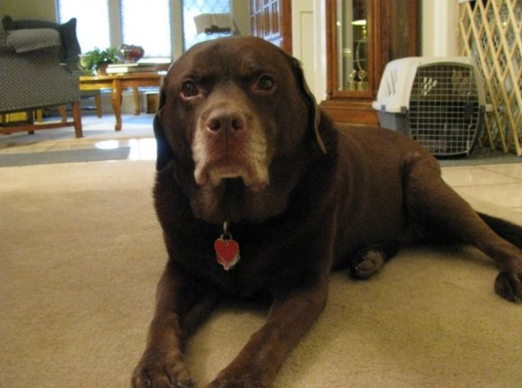
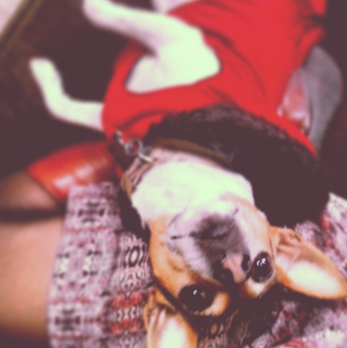
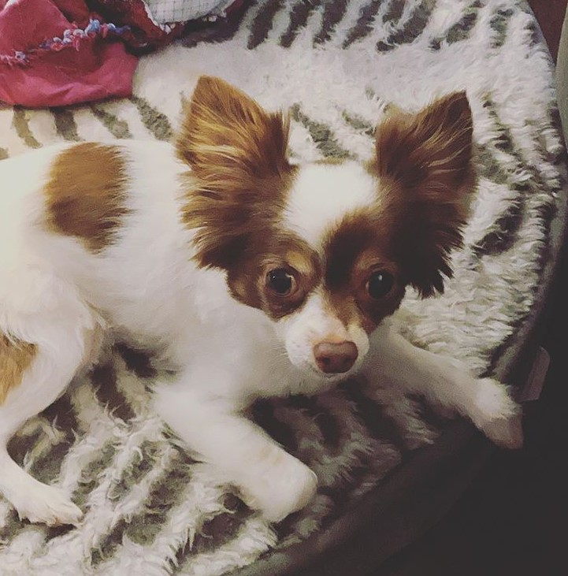
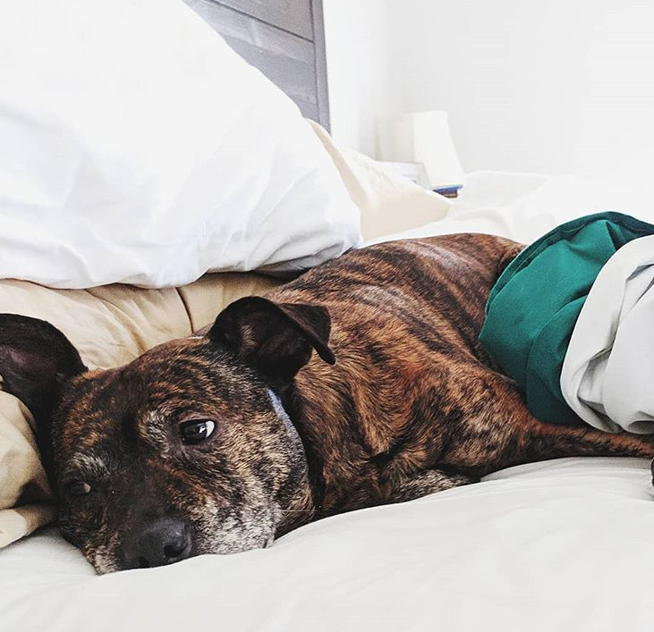

Gabby
Gabby was our family dog when I was younger and I could not have asked for a more loving, energetic, and carefree puppy! Gabby was a Chocolate Lab who loved long walks, impromptu dips in the neighborhood lake (with or without her walking companion attached by leash), and long days grazing in the backyard for fallen mangos. Also known as Gabrielle, GabbyDog, and Gaberellie. She lived out her doggy years at our family home in Grapevine, Texas.
Genevieve
As Gabby became a little older, I decided it was time to get her a puppy companion. That's when Genevieve came into our lives, an energetic, sometimes spastic, rat terrier. At first Gabby was skeptical of this new home invader, consistently leaving any room Genevieve entered or hiding behind the first human savior she could find, but it was not long before Genevieve and Gabby were joined at the hip. On a typical day, Genevieve could be found sun bathing on the back patio, impressively climbing trees to chase squirrels, or scrounging the kitchen floor for fallen popcorn. Also known as Bug, GenBug, and Evie. Her and Gabby spent many years together at our home in Grapevine, Texas.
Tucker
I will be honest by saying this over-sized hamster was not my first pet choice. He came as a packaged deal with my then boyfriend and now husband. However, over the last couple of years, I have grown to love that furry, bug-eyed face. Tucker is a long haired Chihuahua who's favorite activities are nipping at the heels of any stranger who enters the home, demanding to be picked up and put on the couch only to jump down 5 seconds later, and growling whenever you try to move him while he's sleeping. His most redeeming quality is his harmonizing howl which, in true wolf-pack fashion, he produces anytime someone howls at him. Also known as Tuck, Tucky, TuckerWucker and Bubbaduck. At the age of 10, Tucker lives here with us in Kansas City, where I am sure he will remain well into his geriatric years.
Nala
As any good puppy mom, I will never admit to having favorites; however, let's just saw there was a hypothetical life or death situation where I had to pick a favorite... It would be Nala. It was by chance that Nala made her way into our lives. We were toying with the idea of getting a second dog when my Aunt mentioned her co-worker was trying to get rid of theirs. It is neccessary to mention here that they were insane to get rid of this dog. Nala is the most easy going, loving, and low maintenance dog I have ever met. Her favorite hobby is sleeping. The only thing she will get out of bed for is a walk which ironically she loves just as much if not more than sleeping, but that's it. That pretty much sums her up - sleeping and walking. Also known as Nalabear, Bean, and Naller Baller. Nala sleeps the days away with us here in Kansas City.
Honorable Mentions
The following is a short list of other puppies I love in my life. They do not fall directly under my ownership and care; however, they are worth being mentioned as a part of my fur family. Plus, who doesn't want to see more puppy pictures!